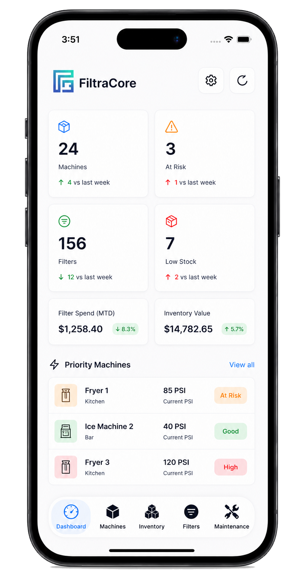

water pipe breaks occur every year in the United States.
Stop running filters blind.
Protect water.
Control costs.
Stop running filters blind. Protect water. Control costs.
Every overdue filter can compromise water quality, increase operating costs, damage equipment, waste energy, and leave teams reacting after the issue is already expensive.
FiltraCore turns filter condition, PSI, maintenance history, and alerts into decisions based on real data.
Water quality
Cost risk
Preventive alerts
Real data


Operational risk
The problem nobody is monitoring.
Every day, thousands of industrial, commercial, and water treatment filters operate without adequate monitoring.
Many companies still replace filters by calendar instead of real condition, creating unnecessary expense and reducing operational efficiency.
When a filter runs beyond its useful life, it can cause:
- Loss of water quality.
- Higher operating costs.
- Damage to equipment.
- Sanitary risks.
- Regulatory non-compliance.
- Unnecessary water consumption.
- Energy waste.
Why it matters
Why does it matter?
Poor visibility around water systems turns small signals into expensive losses, wasted treated water, and preventable operational risk.
of treated water is lost through distribution leaks.
water losses are reported by some systems.
in U.S. water infrastructure needs over the coming years.
gallons of treated water are wasted annually because of aging infrastructure and insufficient monitoring.
Context based on public EPA, ASCE, and U.S. congressional water infrastructure references.
Environmental impact
Every drop counts.
Water is one of the most important resources on the planet.
Filtration efficiency does not only protect equipment and operations; it also helps reduce waste, conserve resources, and improve organizational sustainability.
FiltraCore helps companies make decisions based on real data to maximize filter life while maintaining the quality and safety of their processes.
What FiltraCore tracks
What FiltraCore monitors.
A single operating layer for filter condition, equipment context, service history, and the signals that usually stay scattered.
PSI and differential pressure.
Filter useful life.
Maintenance history.
Preventive alerts.
Performance trends.
Operational compliance.
Equipment and locations.
Historical reports.
Operational value
Benefits for your operation.
FiltraCore connects maintenance discipline with financial, environmental, and compliance outcomes that managers can act on.
Reduce operating costs.
Avoid premature replacements.
Detect problems before they happen.
Protect critical equipment.
Improve audits and inspections.
Reduce water waste.
Centralize real-time information.
Make decisions easier.
Smarter maintenance
From reactive maintenance to intelligent maintenance.
- Changes by intuition.
- Paper records.
- Unexpected failures.
- Scattered data.
- Real-time monitoring.
- Centralized history.
- Preventive alerts.
- Data-based decisions.
Field workflow
A simpler path for the people doing the work.
The field routine stays direct: create the machine, confirm the filter product, install the filter, record PSI, and log maintenance while the desktop dashboard keeps the full operation organized.
Add the machine
Capture name, type, location, department, brand, model, and machine ID in one clean form.

Install the filter
Select the machine, choose the filter product, set lifespan, and create due dates from the phone.

Monitor PSI
Review active filters, update pressure readings, and flag watch items from the same mobile view.

Log maintenance
Record inspections, corrected PSI, notes, and replacement actions while the work is fresh.

Desktop command center
The full operation stays organized by module.
Supervisors can move through dashboard, machines, inventory, suppliers, filters, maintenance, smart import, reports, and accounts while every update stays tied to the selected restaurant or facility.

Register assets before assigning filters.
Location, category, brand, model, serial number, QR, status, PSI, and installed filter stay tied to each machine.
Connect stock, products, vendors, and cost.
Track reorder numbers, filter types, stock, low inventory alerts, supplier pricing, and purchase order preparation.
Monitor lifecycle, pressure, and service history.
Due dates, days left, PSI range, watch status, inspections, technician logs, and replacements stay connected.
Turn existing sheets into structured records.
Process PDFs, photos, spreadsheets, CSVs, and filter sheets to create machines, inventory, and filters faster.


Supplier cost control
Procurement becomes part of the maintenance system.
Each inventory item can have multiple suppliers, current and previous prices, price movement, a recommended vendor, and an initial purchase order workflow.
Multiple suppliers per product
Compare Sysco, Restaurant Depot, Amazon Business, OEM vendors, or local suppliers against the same inventory item.
Price tracking
Monitor current price, last price, update date, movement percentage, and whether the product increased or decreased.
Recommended supplier
Surface the best price, cost difference, and supplier suggestion before purchasing decisions are made.
Purchase orders
Prepare draft, sent, received, and cancelled purchase order flows connected to inventory and supplier products.
Smart import system
From old filter sheets to live operational data.
FiltraCore can process photos, PDFs, spreadsheets, CSVs, and pasted sheets, then detect venue, machine, reorder number, filter type, and quantity before records are created.
Venue detection
Imported rows become separate restaurants, venues, facilities, or workspaces instead of one flat list.
Machine generation
The importer can create machines and link them to the correct location, type, and operational category.
Filter records
Reorder numbers, filter types, quantities, and vendor context become inventory and installed filter records.
Review before applying
Teams preview detected rows before creating records, keeping the import controlled and explainable.
Executive intelligence
Reports connect operational risk, maintenance, inventory, and supplier cost.
FiltraCore turns operational data into a management view: asset health, pending maintenance, PSI analytics, upcoming replacements, stock readiness, supplier changes, cost exposure, and printable summaries.

What buyers understand fast
A cleaner operating layer for casinos, hotels, restaurants, and facilities.
The product story is simple: less guessing, faster documentation, smarter purchasing, and better visibility before filter, machine, or inventory issues affect guests or production.
Protect service quality
Keep PSI changes, filter age, and maintenance notes visible before flow problems show up at the station.
Train teams faster
The mobile workflow gives staff a clear path instead of asking them to remember a desktop process.
Buy with cost context
Supplier comparison, reorder context, stock readiness, and installed filter data help purchasing act with better timing.
Show the work
Maintenance history and printable summaries make it easier to review the operation with owners or managers.
Food service operations
Built around preventive maintenance discipline.
FiltraCore supports daily routines inspired by preventive maintenance, stock readiness habits, traceable service logs, and procurement discipline. It is designed to help teams document work consistently before small issues become expensive downtime.
PSI monitoring
Record baseline and corrected pressure readings so changing flow conditions are visible.
Filter lifecycle
Track installation dates, due dates, lifespan months, and days left by machine.
Traceability logs
Keep maintenance type, notes, technician action, and filter replacement context in one record trail.
Cost readiness
Connect available stock, reorder context, supplier prices, and installed filters so purchasing has better visibility.
Ready to stop managing filters by guesswork?
Open FiltraCore and see how real condition data can protect water quality, reduce waste, and keep maintenance ahead of costly failures.
Monitor PSI
Review filter life
Act before failure
Open Login